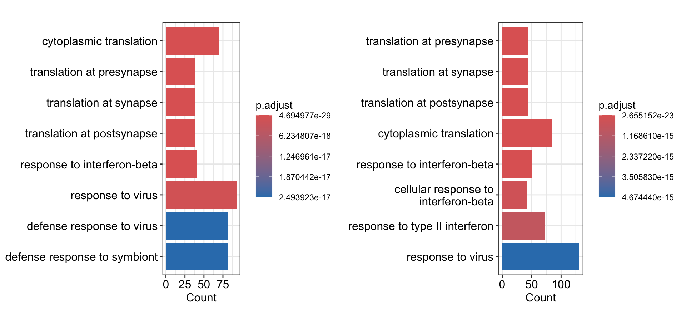
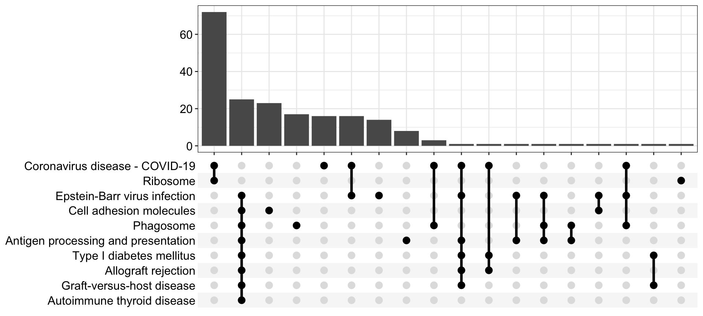
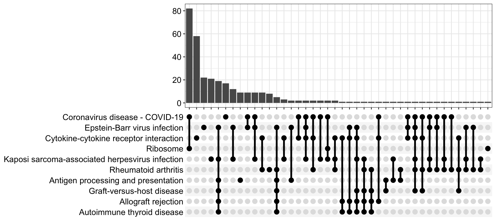
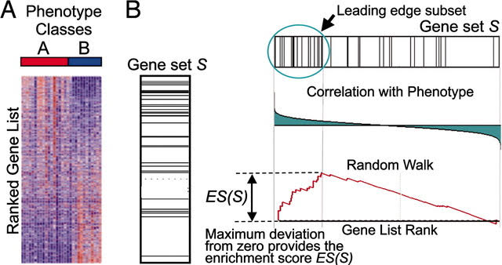
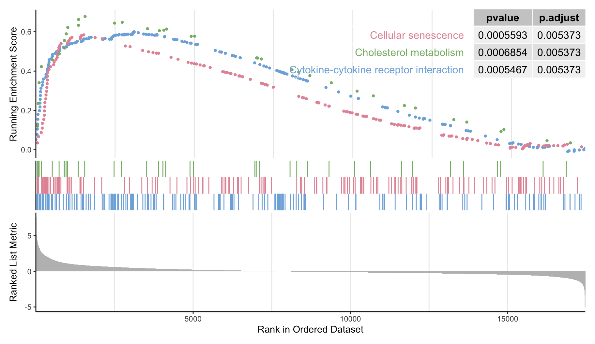
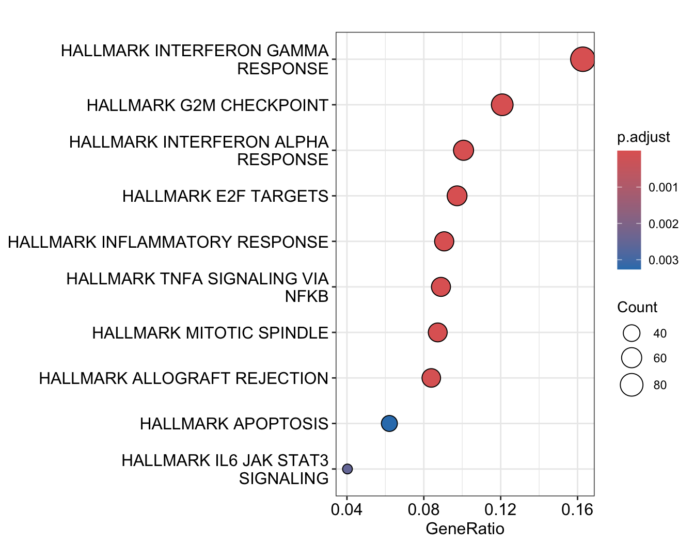
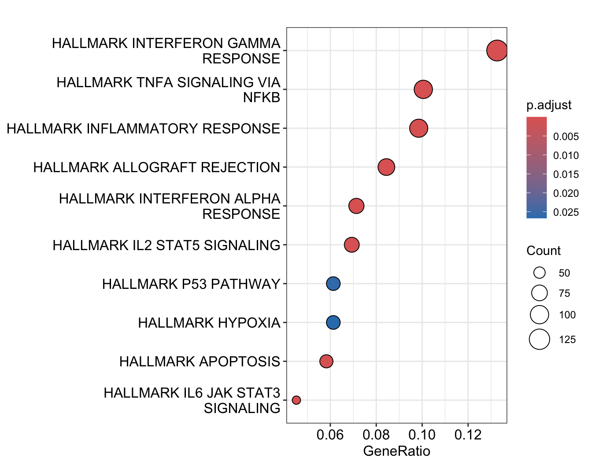

Chapter 7 Functional analysis
The main idea of the functional analysis is to connect observed changes in gene expression with associated altered cellular pathways and biological functions. Below we will try the most well-known methods allowing to gain some insight into biological interpretation of the obtained DE results.
7.1 Gene Ontology (GO) analysis
Gene Ontology analysis is probably the most popular and widely-used method.
The hypergeometric test, that is identical to one-sided Fisher’s exact test, is typically used for over-representation analysis and the p-value of the significance is calculated in the following way:
\[ p = 1 - \sum_{i = 0}^{k-1} \frac{\binom{M}{i} \binom{N-M}{n-i}}{\binom{N}{n}} \] where
\(N\) is a total number of genes in the background
\(M\) is a number of genes in the background that are also in the GO category
\(n\) is a total number of DE genes
\(k\) is number of DE genes that are also in the GO category
While the over-representation analysis can be easily done with many packages in R, the most popular is ClusterProfiler. GO analysis with ClusterProfiler can be easily done with enrichGO function:
ego_pbs <- enrichGO(gene = sig_pbs$gene,
universe = res_pbs_tb$gene,
keyType = "ENSEMBL",
OrgDb = org.Mm.eg.db,
ont = "BP",
pAdjustMethod = "BH",
pvalueCutoff = 0.05)
ego_lps <- enrichGO(gene = sig_lps$gene,
universe = res_lps_tb$gene,
keyType = "ENSEMBL",
OrgDb = org.Mm.eg.db,
ont = "BP",
pAdjustMethod = "BH",
pvalueCutoff = 0.05)We will use boxplots to visualize the enriched categories:
cowplot::plot_grid(barplot(ego_pbs), barplot(ego_lps), nrow = 1)
7.2 Pathway analysis
Over-representation analysis using reference data on KEGG pathways can be done in a similar way, but now we must use enrichKEGG function and utilize NCBI ENTREZ IDs as input:
ekegg_pbs <- enrichKEGG(gene = na.omit(sig_pbs$ENTREZID),
organism = 'mmu',
pvalueCutoff = 0.05,
universe=na.omit(res_pbs_tb$ENTREZID))
ekegg_lps <- enrichKEGG(gene = na.omit(sig_lps$ENTREZID),
organism = 'mmu',
pvalueCutoff = 0.05,
universe=na.omit(res_lps_tb$ENTREZID))library(enrichplot)Since recently, the description of KEGG pathways in the clusterProfiler output data include the part related to a species name, which is - Mus musculus .(house mouse). in this case. This annoying text complicates visualization of the enriched pathways, so we will get rid of it:
ekegg_pbs@result$Description <- sub(" - Mus musculus .(house mouse).", "", ekegg_pbs@result$Description)
ekegg_lps@result$Description <- sub(" - Mus musculus .(house mouse).", "", ekegg_lps@result$Description)Another (and a little bit more complex) way to visualize pathway enrichment results is to use upsetplots, showing co-occurring DE gene sets in respect to the altered pathways they associated with:
ups_pbs <- upsetplot(ekegg_pbs)
ups_lps <- upsetplot(ekegg_lps)ups_pbs
ups_lps
7.3 Gene-Set Enrichment Analysis (GSEA)
Unlike hypergeometric distribution based methods, GSEA works in the assumption that even small and not significant, but coordinated changes in gene expression can have impact on cellular pathways. Therefore, GSEA uses statistics of all the genes in a dataset, taking log2 Fold Changes as an input.

Figure 3: The general principle of GSEA. The figure was taken from Subramanian et al., (2005) https://doi.org/10.1073/pnas.0506580102
Since GSEA interpretation in clusterProfiler rely on NCBI ENTREZ IDs, we will filter out genes not annotated in ENTREZ:
pbs_filtered <- filter(res_pbs_tb, ENTREZID != "NA")
lps_filtered <- filter(res_lps_tb, ENTREZID != "NA")Select gene log2(Fold Changes) and assign NCBI ENTREZ IDs as names of the vectors:
foldchanges.pbs <- pbs_filtered$log2FoldChange
names(foldchanges.pbs) <- as.character(pbs_filtered$ENTREZID)
foldchanges.lps <- lps_filtered$log2FoldChange
names(foldchanges.lps) <- as.character(lps_filtered$ENTREZID)Sort fold changes:
foldchanges.pbs <- sort(foldchanges.pbs, decreasing = TRUE)
foldchanges.lps <- sort(foldchanges.lps, decreasing = TRUE)Now, we can run gseKEGG() function with sorted fold changes as input and using default parameters
gseaKEGG.pbs <- gseKEGG(geneList = foldchanges.pbs,
pAdjustMethod = "fdr",
organism = "mmu",
nPerm = 2000,
minGSSize = 10,
pvalueCutoff = 0.05,
verbose = FALSE,
seed = TRUE)## Warning in .GSEA(geneList = geneList, exponent = exponent, minGSSize = minGSSize, : We do not recommend using
## nPerm parameter incurrent and future releases## Warning in fgsea(pathways = geneSets, stats = geneList, nperm = nPerm, minSize = minGSSize, : You are trying
## to run fgseaSimple. It is recommended to use fgseaMultilevel. To run fgseaMultilevel, you need to remove the
## nperm argument in the fgsea function call.## Warning in preparePathwaysAndStats(pathways, stats, minSize, maxSize, gseaParam, : There are ties in the preranked stats (0.2% of the list).
## The order of those tied genes will be arbitrary, which may produce unexpected results.## Warning in preparePathwaysAndStats(pathways, stats, minSize, maxSize, gseaParam, : There are duplicate gene
## names, fgsea may produce unexpected results.gseaKEGG.lps <- gseKEGG(geneList = foldchanges.lps,
pAdjustMethod = "fdr",
organism = "mmu",
nPerm = 2000,
minGSSize = 10,
pvalueCutoff = 0.05,
verbose = FALSE,
seed = TRUE)## Warning in .GSEA(geneList = geneList, exponent = exponent, minGSSize = minGSSize, : We do not recommend using
## nPerm parameter incurrent and future releases## Warning in fgsea(pathways = geneSets, stats = geneList, nperm = nPerm, minSize = minGSSize, : You are trying
## to run fgseaSimple. It is recommended to use fgseaMultilevel. To run fgseaMultilevel, you need to remove the
## nperm argument in the fgsea function call.## Warning in preparePathwaysAndStats(pathways, stats, minSize, maxSize, gseaParam, : There are ties in the preranked stats (0.21% of the list).
## The order of those tied genes will be arbitrary, which may produce unexpected results.## Warning in preparePathwaysAndStats(pathways, stats, minSize, maxSize, gseaParam, : There are duplicate gene
## names, fgsea may produce unexpected results.Remove the species name in the pathway description again:
gseaKEGG.pbs@result$Description <- sub(" - Mus musculus .(house mouse).", "", gseaKEGG.pbs@result$Description)
gseaKEGG.lps@result$Description <- sub(" - Mus musculus .(house mouse).", "", gseaKEGG.lps@result$Description)Check the results for both comparisons:
paged_table(gseaKEGG.pbs@result)paged_table(gseaKEGG.lps@result)Apart from the adjusted p-values, enrichment score is another important characteristic of the altered pathways, reflecting the degree of which gene sets are over-represented at the top or at the bottom of the input ranked gene lists. You may find the corresponding values in enrichmentScore column of gseaKEGG.pbs and gseaKEGG.lps tables.
Below is a GSEA plot for three manually selected enriched pathway from the PBS comparison:
gseaplot2(gseaKEGG.pbs, geneSetID = c(15, 23, 29), pvalue_table = TRUE,
color = c("#E495A5", "#86B875", "#7DB0DD"), ES_geom = "dot")
7.4 Gene Set Enrichment Analysis with mSigDB
In the section above we used GO terms and KEGG pathways to perform enrichment analyses, but sometimes it is needed to compare gene expression changes against other gene sets, such as signatures or markers of the various diseases and biological processes. A possible solution is to use Molecular Signatures Database (mSigDB) represents the curated lists of gene sets, divided in 9 main collections:
H: Hallmark gene sets
C1: Positional gene sets
C2: Curated gene sets
C3: Motif gene sets
C4: Computational gene sets
C5: Gene Ontology gene sets
C6: Oncogenic signatures gene sets
C7: Immunologic signatures
C8: Cell type signatures
In R this database is already available through the msigdbr package:
library(msigdbr)While mSigDB contains annotated gene sets for many species (you can get a list of them with msigdbr_show_species()), we will specify ‘mouse’ to retrieve mouse-related sets for the Hallmark gene sets:
msig_h <- msigdbr(species = "mouse", category = "H")Next, prepare an input reference table for enrichment analysis:
msigdbr_t2g <- msig_h %>%
dplyr::distinct(gs_name, ensembl_gene) %>%
as.data.frame()This table consist of two columns, one for gene set names (specific terms) and another one for the corresponding ENSEMBL IDs:
paged_table(head(msigdbr_t2g))Run the over-presentation analysis on significant genes with prepared term-to-gene table using enricher() function:
hallmarks.pbs <- enricher(gene = sig_pbs$gene, TERM2GENE = msigdbr_t2g)
hallmarks.lps <- enricher(gene = sig_lps$gene, TERM2GENE = msigdbr_t2g)Visualize the obtained enriched terms for PBS comparison:
dotplot(hallmarks.pbs)
… and for LPS comparison:
dotplot(hallmarks.lps)
To run the GSEA analysis with mSigDB terms we must select NCBI ENTREZ IDs instead of ENSEMBL ones:
msigdbr_t2g <- msig_h %>%
dplyr::distinct(gs_name, entrez_gene)Now execute GSEA function with foldchanges.pbs gene list and re-generated term-to-gene annotation:
gsea_h_pbs <- GSEA(foldchanges.pbs, TERM2GENE = msigdbr_t2g)## preparing geneSet collections...## GSEA analysis...## Warning in preparePathwaysAndStats(pathways, stats, minSize, maxSize, gseaParam, : There are ties in the preranked stats (0.2% of the list).
## The order of those tied genes will be arbitrary, which may produce unexpected results.## Warning in preparePathwaysAndStats(pathways, stats, minSize, maxSize, gseaParam, : There are duplicate gene
## names, fgsea may produce unexpected results.## Warning in fgseaMultilevel(pathways = pathways, stats = stats, minSize = minSize, : For some pathways, in
## reality P-values are less than 1e-10. You can set the `eps` argument to zero for better estimation.## leading edge analysis...## done...Check out the enriched terms:
paged_table(head(gsea_h_pbs))An essential part of DE analysis is the validation of the obtained gene expression changes with custom gene sets, identified by other researches in similar experiments. Here we will use previously described enrichment methods to compare our changes against a list of DAM metabolites.
Task 5: Perform GSEA on foldchanges.pbs and foldchanges.lps lists using DAM-related genes as an argument for TERM2GENE = ... in GSEA() function (1.5 point).
Task 6: So far we did the enrichment analysis for all the obtained DE genes per comparison, but sometimes it is useful to focus on the specific groups of DE genes. For example, one can split DE gene set into down- or up-regulated subsets and test them with the enrichment methods, but in this task you will be asked to accomplish a more complicated, but, in the same time, more interesting analysis:
First, perform clustering of your DE genes (you can use DE set for the comparison you prefer most) to identify groups of genes with similar expression trends. The most straightforward method here is hierarchical clustering, but you can also any other adequate gene clustering methods you like.
Next, choose the number of clusters based on some criteria. It can be the Gap-Statistics, the Silhouette or any other appropriate method you like.
Perform the enrichment analysis (
enrichGO/enrichKEGG) on the groups of genes you like most, two or three groups will be enough. Provide the plots and also comment on the enrichment results obtained.
As it was mentioned, this task is more challenging, but is it close as possible to the real research tasks relevant to the DE results interpretation.
This task will give you 1 point. Have fun!